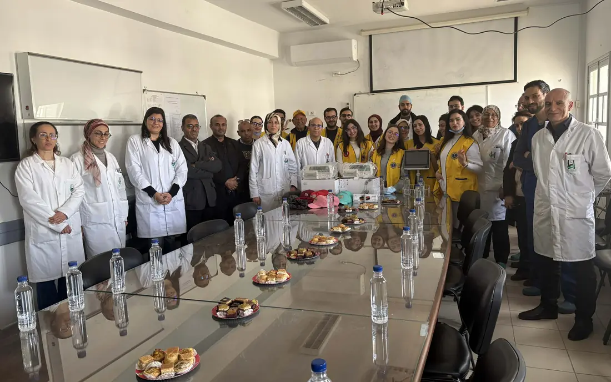
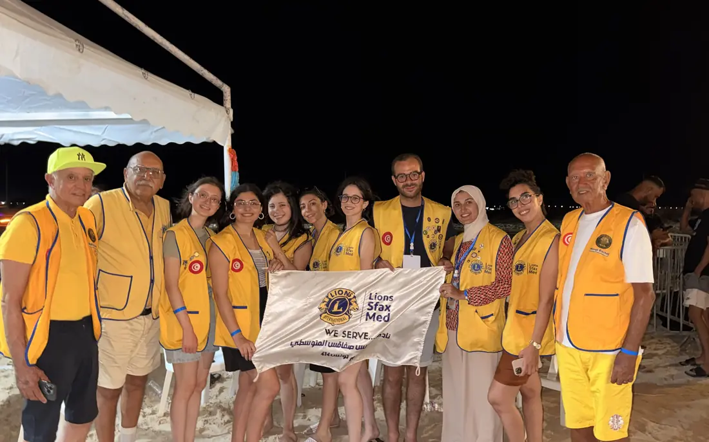
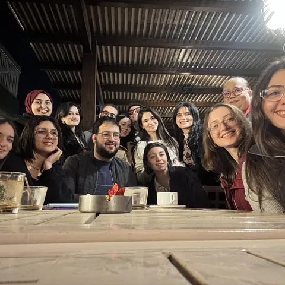

Diabète
Nous sensibilisons au diabète et préparons des dépistages de proximité à Sfax.
Le service prend tout son sens lorsqu’il devient action.
Nos quatre priorités guident notre engagement : diabète, environnement, humanitaire et jeunesse.
Nous sensibilisons au diabète et préparons des dépistages de proximité à Sfax.
Nous mobilisons les habitants autour du littoral et des espaces de vie sfaxiens.
Nous identifions les besoins matériels et organisons une aide adaptée aux familles.
Nous accompagnons les jeunes dans leurs apprentissages et leurs initiatives locales.
Scénario de démonstration : aucune donnée présentée ici ne constitue une annonce officielle.

Une journée de dépistage présentée dans les contenus de démonstration.
Découvrir cette action
Une journée de reboisement présentée dans les contenus de démonstration.
Découvrir cette action
Une remise de bourses présentée dans les contenus de démonstration.
Découvrir cette actionAucune action ne correspond à ces critères.
Santé oculaire · Cancer infantile · Malnutrition · Aide aux victimes de catastrophes · Santé mentale et bien-être
Ces causes de Lions Clubs International complètent nos quatre axes prioritaires.